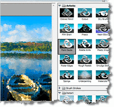

Digital Filters
Last week you learned how to load and save digital images, using the functions in the stb image libraries. Now, let's make some changes to those images before you save them. Programs that do this are called image filters. You may have seen them in programs like Photoshop, or in the camera app on your phone.
Although the programs we'll write won't be as sophisticated or as fast as the commercial filters you can purchase, it will give you an idea about how such programs are written. (Plus, you'll get some exercise using pointers!)

Click the "running-man" to open the starter files in ReplIt. You'll have to Fork the Repl to get your own copy. When you open main.cpp you'll see some code similar to that you used last week. This time, we're going to load our picture of "Pete the Pirate" and modify it.
 This course content is offered under a
CC
Attribution Non-Commercial license. Content in this course
can be considered under this license unless otherwise noted.
This course content is offered under a
CC
Attribution Non-Commercial license. Content in this course
can be considered under this license unless otherwise noted.